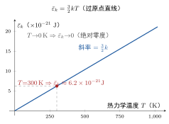

理想气体的温度公式
一句话定义
温度公式 把宏观温度 与微观分子无规热运动的平均平动动能联系起来，表明温度是分子平均平动动能的量度。
定性
先把”温度到底度量什么”想明白。
我们摸到一杯热水说”烫”，以为温度就是”热多少”。这其实是一种误差很大的直觉。真正的微观图画是：物体里的分子在永不停歇地乱动，温度计里的”温度”并不量”热的多少”，而是量分子乱动得有多猛——它读的是分子平均平动动能的大小。温度越高，不是”更热”那么简单，而是分子平均每秒钟撞得更凶、飞得更快。
这就引出一个关键画面：两块温度相同的物体，分子平均动能一定相同——哪怕一块是铁、一块是棉花，也不管它们质量差多少。因为它们”都烫到 80 度”，意味着铁和棉花里的分子平均”乱动能”一样。但这不代表它们”含的热”一样：铁质量大、比热低，烧到同样温度往往需要不同的热量。温度谈论的是”分子平均动能”，热量才是”能量转移的数量”——一个管”多猛”，一个管”多少”，这是温度与热最深刻的区别。
它在体系里的位置：温度公式是压强公式的”孪生兄弟”。压强公式把压强接出来，温度公式把温度接出来——两个宏观量都被分子平均动能解释了。温度公式更进一步：它揭开了热力学温标（开尔文）的真正含义——绝对零度对应分子平均平动动能为零，所以温标的零点不是随便定的，而是有物理依据的。
反直觉的点：温度是一个统计量，对单个分子毫无意义。你不能问”这个分子的温度是多少”——温度说的是 个分子的平均动能，是个集体属性。单个分子速度再快再慢，都谈不上温度，就像问”这枚硬币抛出来的平均值是多少”没有意义一样。这正呼应了统计规律的主旨：温度是整体的统计面孔，不是个体的属性。

图：气体分子平均平动动能 随热力学温度 成正比——过原点的直线，斜率 ； 时 （对应绝对零度）。
数学表达
温度公式的标准形式：
各符号： 是分子的平均平动动能（）， 是分子质量， 是分子速率平方平均； 是玻耳兹曼常数； 是热力学温度（）。
由它可解出广泛用于估算的分子平均速率——根均方速率：
读这个公式的结构：温度只与平均动能挂钩，与气体种类无关。 是普适常数，所以同样的 ，任何气体分子（无论氢、氧、氮）的平均平动动能都一样；只是轻的分子因质量小、要达到同样动能必须跑得更快，故 随 增大。
关键因子 ：它来自三个平动自由度各均分 。分子在 三方向各自平均贡献 （这是能量均分定理），所以平动总平均为 。这 与压强公式里的 一脉相承——都源于”三方向各向同性”。
一个易错点： 只含平动动能；若分子还有转动、振动的自由度（如多原子分子），总内能还要加相应项。温度对应的是”无规热运动的激烈程度”，主要由平动贡献决定。
关键性质
-
温度 ∝ 分子的平均平动动能，与气体种类无关。 任何理想气体在同一 下， 相同。为什么： 普适、公式不含 ，故温度只体现”平均动能”，不体现”什么分子”。这正是温度能作为”热运动强度”统一标尺的原因。
-
是三个平动自由度均分的结果。 每个方向贡献 。为什么：分子运动各向同性（等几率），能量按自由度均分—— 三个方向各得一份。这解释了 为何是”平动”专属；若分子还有转动、振动，总能量会更大（但仍与温度挂钩）。
-
绝对零度 对应分子平均平动动能为零。 根据 ， 时 。为什么：温度是平均动能的量度，平均动能趋零即”无规热运动趋向停止”。这是开尔文温标零点有物理意义的原因——它不是人为选取，而是对应分子热运动”熄火”的极限。
-
温度是统计量，对单个分子无意义。 温度描述的是海量分子的平均动能，不是某个分子的动能。为什么：单个分子速度随机、涨落大，唯有海量平均才稳定；正如统计规律所言，宏观量靠平均才确定。因此”这个分子几度”是不成立的说法。
-
温度相同 ≠ 内能相同、散热相同。 两个温度相同的系统， 相同，但内能还取决于分子数与自由度，散热还取决于比热与质量。为什么： 是”每个分子平均动能”，内能是”全体分子动能之和”，二者不同维度。这提醒我们温度不是能量的总账。
推导
现在把温度公式真正推出来——不是引一个 就算完，而是看清它是把宏观物态方程与微观压强公式”对账”得来的。
先抛问题：温度在宏观上是”热多热少”的读数，在微观上该对应什么？为什么偏偏是”分子平均平动动能”而不是别的？这条 是怎么写出来的？
设物理场景。取一定量的理想气体，既处在平衡态（可用宏观物态方程），又可用微观分子运动描述（可用压强公式）。两条通道描述的是同一个系统。
列依据。三条既有的、可靠的结论：
- 宏观的物态方程 （理想气体平衡态）；
- 微观的压强公式 ，其中 ；
- 普适常数关系 （ 为阿伏伽德罗常数）。
逐步演绎。第一步，把压强公式用分子数 改写。因为 ，故
这一步把”压强×体积”换成了”分子总数 × 平均平动动能”。
第二步，与宏观物态方程对账。物态方程给出 ，微观压强公式给出 。两者都等于 ，故必相等：
第三步，消去量与阿伏伽德罗的联系。物质的量 ，代入上式：
第四步，解出 ：
回头看。结论豁然开朗：温度公式不是独立发明的，而是把”宏观的物态方程”与”微观的压强公式”两条独立通道拿过来”一对照”，发现它们必须描述同一个 ，据此反推出来的。它说明：宏观上温度这个数，微观上对应的正是分子平均平动动能； 是这个换算的”汇率”。整个过程用到的 ，正是压强公式里 在能量语言里的镜像、以及三方向均分的体现。温度的被”揭开”：它不再是一个人为定义的冷热刻度，而是分子无规热运动平均动能的直接读数。
为什么重要
温度公式揭示了温度最本质的身份，其地位与后果：
- 给温度下定义：彻底告别”温度=热的多少”的直觉，确立”温度=分子平均平动动能的量度”。这让温度从”冷热刻度”升格为”微观运动强弱的度量”。
- 给开尔文温标一个物理零点：绝对零度对应 ，不是随便定的，而是分子热运动”熄火”的极限。这为热力学温标（绝对温标）提供了不依赖具体物质的普适依据。
- 统一了宏观与微观：与压强公式一道，把 、、 三个宏观量背后的微观机制全部讲清，是气体动理论的核心成果，也是后续能量均分、内能、麦克斯韦分布的理论起点。
- 给工程一个”通用参照”：室温 对应分子平均动能约 （约 0.04 eV）——这个数值红线式地解释了为何室温下分子热运动无法爬过许多化学键、半导体禁带，是热噪声、热激励等工程判断的基准。
适用条件
温度公式的成立条件与压强公式同源：
- 理想气体：分子视为无相互作用的质点。多原子分子因有转动、振动自由度，总能量表达式更复杂，但 （平动部分）依然成立。
- 平衡态：温度是宏观统计量，须海量分子无规运动、各处均匀才谈得上”确定 “。非平衡态无单一温度。
- 大量分子：温度是统计平均， 海量才稳定。微尺度（分子数很少）温度概念趋于失效。
- 经典普朗克/高温近似： 是经典能量均分的结果。
边界要说清：极低温量子效应下，分子动能被量子化、自由度被”冻结”， 均分不再精确；超高温下分子可能解离、电离，不再是简单理想气体。真实边界：液氦温度以下（需量子统计）、上万开尔文（等离子体化）均超出本公式适用范围。
边界与误区
-
误区一：把温度当成”热量多少”或”含热多少”。 根因：日常”烫/凉”的感觉让人把温度和”热”划等号。正确区别：温度是分子平均平动动能（多猛），热量是能量转移的数量（多少）。温度相同不代表含热相同——铁块和棉花烧到 80 度，温度相同，散热放出热量却大不同。
-
误区二：以为绝对零度是”分子完全停止”。 根因：由 推出 时动能趋零，就以为分子停了。正确区别：这是经典近似；量子力学说即便 ，分子仍有零点能（零点振动），不会完全静止。绝对零度不可达到，是极限概念。
-
误区三：认为”单个分子的温度”有意义。 根因：把温度当个体属性。正确区别：温度是统计平均量，属于整个大量分子系统，对单个随机分子无定义。问”这个分子几度”如同问”这枚硬币抛一次的平均值”——不成立。
-
误区四：忘了温度公式 只管平动。 根因：拿 去套多原子分子的总能量。正确区别： 是平动部分（）；转动、振动自由度还要另加（能量均分，每自由度 ）。把 当”总能量系数”会少算多原子气体。
对照
最容易和温度公式混的是压强公式。两者是”孪生”，只用一个关键差异区分：
温度只依赖”平均动能”（与密度无关），压强还依赖”分子数密度”。
温度公式 不含 ——温度只看分子平均动能，与分子稀密无关；压强公式 含 ——同样温度，分子越密、撞得越频繁，压强越大。一句话记忆：温度问”分子多猛”，压强问”多猛的同时有多密”。这个差异正是理解”两罐同温差压、同压差温”等现象的钥匙。
例子
我们把温度公式实际用一次，算出”室温分子到底多猛”。
设 （室温）的理想气体。用温度公式：
每个分子平均平动动能约 焦耳。换算成更常用的电子伏特（）：
室温分子平均动能只有约 0.04 eV——这是一个极有用的量级直觉。作为对比：典型的化学键能约 1–4 eV（是室温热能的几十到上百倍），半导体硅的禁带约 1.1 eV（远超室温热能的 20 倍以上）。
反推工程含义：室温下单个分子的热运动能量太小，小到撞不断大多数化学键、打不穿半导体禁带——这就是为何常温物质能稳定存在、半导体在室温下不会因热激发而大量导电。反过来，一旦温度升高， 线性上升，分子的热运动变猛，到几千开尔文时热能足以破坏化学键（分子解离）、激发载流子，固体便熔化、化学反应加速、半导体导电性突变。温度背后是动能的线性账——控住温度，就控住了微观能量，也就控住了无数工程现象的开关。